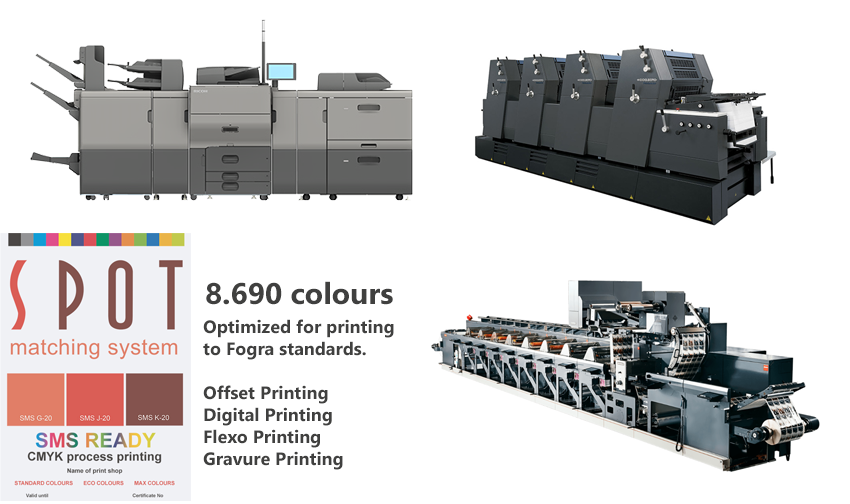
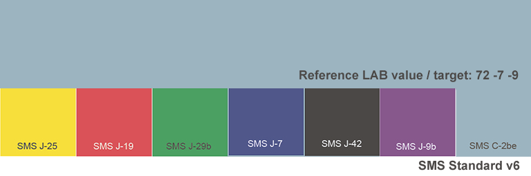

Shop SMS
SMS Technical
SMS products & services
SMS in articles and webinars
Testimonies
SMS and the environment SMS news Interesting links SMS: How, why and when SMS Q&A
SMS for design and
advertising Getting started with SMS colours SMS BLOCKS |
SMS for print Printers (in all categories) SMS READY - or not? |
Spot Matching System for print shops (all categories)

-
Spot Matching System (SMS) is the most technically advanced colour palette in the world
when it comes to maintaining consistency in colour from one media to another. -
SMS is a new approach for designers to select colours and prepare them for print.
-
Together with the design community we want to change the world.
-
We want to change the definition of "Spot colour".
-
We want to change the definition of "Brand colour".
-
We want to change the definition of "Close enough".
The Spot Matching System was launched on December 1st 2018, which happened to be the 100 year anniversary of Icelandic sovereignity from Denmark.
What we have today is:
-
6 colour palettes, each consisting of 2.607 SMS colours (v7) suited for Print, Web and TV.
-
Designers can create their own custom SMS gradients containing any SMS colours.
-
Designers can order custom SMS colours based on existing logos.
-
All SMS colours are available for standard displays (sRGB/REC 709) - from smartphone to Cinema.
-
Perfect consistency in printing of SMS colours when printing according to ISO 12647 (Fogra/G7).
-
Absolute visual consistency in SMS colours between coated and uncoated paper (ECO and Standard versions).
-
A unique approach to defining brand colours (SMS Visual Brand Identity Approach)
See www.spotmatchingsystem.com for details and www.spotmatchingsystem.com/services to view our complete range of SMS products and services, along with prices.
If your print shop is ready to accept, output and print PDF files set up for printing according to FOGRA39, FOGRA47, FOGRA51 or FOGRA52, GRACoL 2006, Japan 2011 (Coated) or to GRACoL2013 G7 standards (CRPC1, CRPC3, CRPC6 or even CRPC7), you are capable of printing our colours and you are qualified to promote yourself as SMS READY - see www.spotmatchingsystem.com/technical/smsready and www.spotmatchingsystem.com/services.
For details on what print standards are suited for each of our colour
palettes, see
here.
It doesn't matter if you are an offset, flexo, gravure or digital
Printer!
SMS colours in design simply require print shops in all categories
(offset, gravure, flexo, digital) to
be able to print our CMYK colours within a dE00 or 3 or less.
P r i n t t o S t a n d a r d s
SMS contributes to a more professional mindset and consequently more consistency and accuracy in printing all around - between Printers in their category and between Printers in different categories.
This may seem painful, and there may be some initial cost involved, while Printers are getting the hang of printing to standards but in the long run this will reduce the number of reprints due to mistakes and increase the number of happy customers as long as customers who are not just looking for the lowest price but rather quality and consistency at a reasonable price.
Aligning your output to international standards also makes it much easier to adjust the colour output of all your presses, whether they are offset, flexo, gravure or digital presses. An easy way to do this is to create custom CMYK-to-CMYK icc profiles that can be used to adjust a standard PDF to the actual output of your presses, as they are (rather than trying to manually adjust each press to output colours in a certain way).
Spot-Nordic offers print shops a complete solution to create such CMYK-to-CMYK icc profiles for printing presses and printers, that includes a 1 year SMS READY subscription, worth EUR 950 - see https://www.spot-nordic.com/qc/special1 and https://www.spot-nordic.com/qc/special2.
Getting your SMS READY badge out there is also a confirmation that your print shop is able to work for even the most demanding customers globally - which should open your doors for bigger and better accounts.
We will be right here to support this initiative and answer any
technical questions Printers may have about how they should go about
printing to ISO standards and who they should call.
No matter where you are in the world, we are able to refer a local specialist who can
help
get your colours under control.
The Spot Matching System is in a league of it's own when it comes to defining and selecting colours for brands, for professional printing, web and TV / omnichannel design, - well anywhere where cross-media colour consistency is a basic requirement.
We work hard every day to make the SMS experience easier and more user friendly, to give designers more independence and control over their SMS colours and the brand colours of their respective customers.
In addition we have a few additional breathtaking and disruptive surprises up our sleeve that will help establish SMS as a must-have tool for any designer.
We have only just begun!
If your print shop is capable of printing according to ISO 12647 standards, or is willing to do what is required to do this, SMS is the perfect colour palette for you and what you should be recommending to your customers.
SMS helps keep your presses running.
Spot-Nordic can provide you what you need to print to ISO 12647 standards - see www.spot-nordic.com/qc wherever you are located, either directly or with the help of local partners in your country.
SMS is a CMYK or CMYKOGV spot colour palette so you will not have to worry about washing down your presses.
Simply be sure to print to your specifications, be it Fogra or G7 and staying within your dE00 and your SMS colours will be perfect, everytime!
When you get a request from a customer asking to which standard you print, you simply need to be ready to reply: FOGRA39, FOGRA51, FOGRA47 or FOGRA52 or optionally GRACol CRPC3 and CRPC6 or CRPC7 (G7).
Check for SMS colours
You might want to ask your customers as a rule to make clear exactly which SMS colours they are using and where they are to be found within the document layout.
Since SMS colours for print are delivered in CMYK format, they are a part of the layout, so you/your printers need to know where to look for them.
Having received this information from your customers, your pre-press personnel, after taking the SMS Crash Course, can check those colours within the layout (typically a logo or headline or even background tint) and compare them against the standard before the job is sent to plate and of course your Printers can monitor the same colours during the print run - even one by one if they have a TECHKON SpectroDens instrument on the press.
To outline the urgency, it is easy as pie to apply any SMS colour to a bitmap image, - for instance digitally dying a piece of clothing in an original SMS colour, - say the brand colour of the company in question, so it's not just logos and headlines that your Printers may have to watch out for from now on, but the colour of certain parts within a single image within the layout (see picture here below).
Outside the pressroom, SMS master colours can be derived to dyes for entire collections of clothes, toys or just about any product, giving the manufacturers the opportunity to present their collections in perfectly correct SMS colours in standard CMYK printing, as well as online and on TV.
SMS ECO, Standard and MAX colours are now even available in FOGRA58 format - for digital printing on textile.
This is what Printers in the 21st Century need to prepare for. It's no longer "Just CMYK".

SMS layouts - keeping track of colour critical SMS colours
In order to make it easier for Designers and Printers to keep track of SMS colours within CMYK layouts, as an option we provide Designers with bitmap versions of SMS colours in TIFF format, - labelled SMS colour patches in the correct CMYK halftone on a job-to-job basis, which they can use to create their own custom SMS colourbars within the layout, big or small.
In fact we have made it possible for Designers to convert their own sRGB
SMS colours to CMYK and thus they can easily create their own SMS
colourbars in their CMYK version of choice.
You may of course request the SMS colour patches from your customer, if you would like to set up an SMS colourbar by yourself as a convenient aid to your Printers during printing.
Here is an example of what an SMS custom colourbar could look like on a print form.


We have also released comfortable SMS Control Strips that are available online free of charge, and can be dropped anywhere within - or just outside the layout, to keep track of whether colours - including of course SMS CMYK colours are correct or not - see here.
Your customer might also slip you a contract
proof (SMS Colour Ticket) containing SMS colours, certified according to ISO 12647-7-2016 for
either Fogra 39 or 51 (for coated paper) or Fogra 47 or 52 (for uncoated paper).
We recommend use of so called SMS tickets, which are small approx. size
A7 tickets containing only the SMS spot colours to be watched during
printing.

SMS ticket.
Our general recommendation to designers is to select neutral, white
paper/substrate for all SMS jobs to keep their SMS colour shades as correct as
possible and to use ink tints to get an off-white / classic feel to the
layout, if that is required rather than selecting off-white paper, which
will screw up more or less all colours of the job.
Not all colours can be adapted to all papershades and we prefer consistency between colours within a logo, rather than to try to force one colour closer to what it should be but having to leave others behind.
That is why we prefer and recommend sticking to the ISO standard papershades. If a customer insists on using off-white paper, please recommend that they use the SMS ECO colour palette, which is created for off-white paper and are optimized for newspaper printing.
No matter what your print standard is: It is absolutely essential that you, as a Printer, inform your customers clearly about which standard you print to - for coated and uncoated paper and that you provide them - and us with complete Adobe settings to be used - and keep us in the loop if you change anything (cc to support@spotmatchingsystem.com).
SMS colours are available for printers that print in accordance with the current ISO 12647-2-2013 and the old ISO 12647-2-2004/AMD 2007 standard. We provide both Fogra and GRACoL CMYK variations of colours, depending on the print standard of the Printer, chosen to print the job.
Fogra 39 and Fogra 47 belong to the older ISO 12647-2 standard and Fogra 51 and Fogra 52 belong to the new ISO 12647-2-2013 standard.
SMS colours for offset printing are in almost all cases delivered in CMYK mode, so you need to be aware that the PDF files you receive from designers that contain SMS CMYK colours / SMS CMYK graphic elements are ready as they are for printing according to the CMYK print standard that you claim to use/accept.
Be sure to communicate the Fogra or G7 standard you require/accept, to your customers!
It doesn't only mean that you can print SMS colours correctly. It also means that you can print entire jobs according to standards - be it Fogra or G7.
It is a very good idea to use your badge in all communications to designers, advertising agencies and brandowners, for instance as a part of your signature in emails.
For instance:

Printshops in all categories:
-
Select one person at your company to do our SMS READY Expert training. This person will be our technical contact at your company - see details on the SMS READY Expert programme and details on what the print shop SMS READY certification includes and costs at www.spotmatchingsystem.com/services
-
Print the SMS test patches on your printing press(es) and confirm that you are in fact able to print our SMS colours within a DE2000 of 3 - information and test patches are available for download here.
-
Once approved, order your 12 month SMS subscription - see further details on what is included here.
-
Order the SMS READY badge(s) for your print standard(s) - contact support@spotmatchingsystem.com.
-
Appoint 2-3 key persons within the company - including of course your SMS READY Expert, at least one from prepress and one printer to take the SMS Crash Course, where they will get clear instructions on how to monitor SMS CMYK colours, what instruments are recommended for Quality Control, which papertypes they should consider recommending to their customers (coated and uncoated) and why and last but not least, exactly what instructions they should give designers working with SMS colours being prepared for printing at the Printshop for accurate and predictable colour results.
-
Optionally, if you have a proper proofing facility in-house (capable of printing contract proofs according to ISO 12647-7-2016), you may additionally apply to become an official SMS Proofing Facility, offering official SMS posters and SMS colour tickets to your local customers.
-
Use your SMS READY badge(s) in your marketing to promote the unique, media neutral Spot Matching System, along with your official quality assurance to your current and future customers, - the promise of printing to universal standards.
You will be allocated a unique SMS customer ID which should be used when ordering SMS products and services.
Contact support@spotmatchingsystem.com for more information.
Getting started with SMS colours SMS shop SMS Technical SMS in general
Interesting links
SMS: How, why and when?
Spot Nordic
Getting SMS
READY
Spot-Nordic,
Spóahólar 4, 111 Reykjavik, Iceland
Phone: +354 896 9790
E-mail:
support@spotmatchingsystem.com